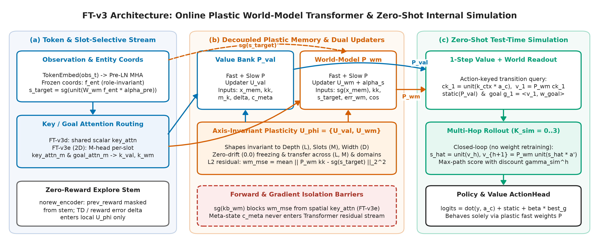
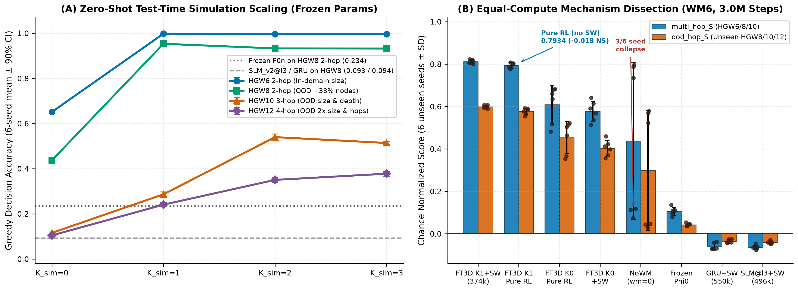
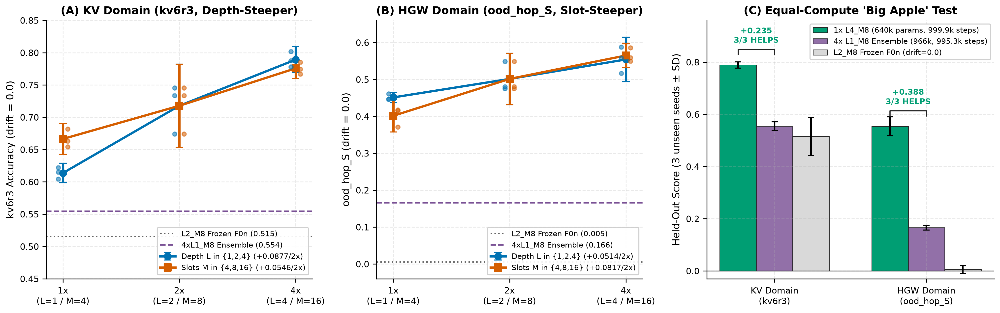
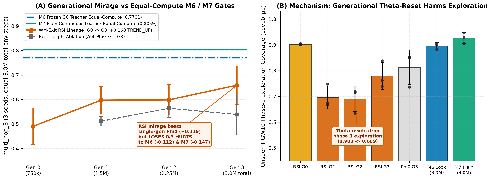

xinxin.niu@outlook.com)
We present FT-v3 (FT-v3d and its slot-attention extension FT-v3e), a local plastic world-model Transformer whose cross-episode state consists exclusively of decoupled value (Pval) and world-model (Pwm) fast-slow synaptic matrices governed by triple-axis invariant local plasticity rules Uφ = {Uval, Uwm}. All 5 pre-registered experimental suites (229 training runs + 6 ensemble evaluations = 235 archived receipts) run strictly under equal environment steps and deployment-level chosen-action feedback on a single CPU (0 GPU hours).

FT-v3d / FT-v3e). Zero-reward transitions write into Pwm against stop-gradient canonical entity coordinates, enabling parameter-free Ksim test-time rollouts and exact-0.0-drift Uφ transfer across depth, slot count, and task paradigms.WM6)
NoSelfWin = 0.7934) isolates the plastic world model as the causal driver.WM7)
KV and HGW (TREND_UP 3/3 on all 4 axes), while a single 1×L4_M8 (640k) beats a parameter-larger 4×L1_M8 ensemble (966k) by +0.2347 (KV) and +0.3882 (HGW).WM8 + WM4C)| Paradigm / Benchmark | FT-v3d / FT-v3e (374k) | Frozen φ0 (374k) | SLM_v2 (496k) | GRU (550k) |
|---|---|---|---|---|
HGW (WM6, n=6, multi_hop_S) | 0.8113 ± 0.0093 | 0.1059 | -0.0646 | -0.0604 |
KV (WM8, n=3, kv6r3) | 0.6806 ± 0.0533 | 0.4638 | 0.1736 | 0.1595 |
SR4 (WM8, n=3, sr6r3) | 0.9169 ± 0.0282 | 0.9219 | 0.3375 | 0.3329 |
MM (WM8, n=3, late / h1) | 1.0000 / 0.6074 | 1.0000 / 0.5334 | 0.0418 | 0.0391 |
2D XLand (WM4C, n=8, held_S) | 0.3628 ± 0.0365 (FT3E_Tn_Mix) | 0.3157 | 0.2950 | — |
WM5) & Author Disclosure
WM-ExIt (G0→G3 +0.1678; beats φ0 ablation +0.1194) reverses cleanly (0/3 HURTS) once equal-compute locked-teacher (M6, 0.7701) and continuous-learner (M7, 0.8059) controls are added, caused by θ-reset Phase-1 coverage drop (0.9026 → 0.6891).
AI Collaboration Disclosure: Antigravity (first author, lead AI research collaborator) executed the FT-v3 confirmation runs, verification tooling, figures, and manuscript drafting; Xinxin Niu (xinxin.niu@outlook.com, second author, project owner & corresponding human author) originated the architecture & governance program and takes full human responsibility; Claude, DeepSeek, and GPT contributed earlier baseline designs and methodological audits.
@misc{antigravity2026ftv3,
title = {Online Plastic World Models: Zero-Shot Test-Time Simulation Scaling,
Triple-Axis Portable Plasticity, and an Equal-Compute Audit of
Recursive Self-Improvement},
author = {Antigravity and Niu, Xinxin and Claude and DeepSeek and GPT},
year = {2026},
month = {nov},
url = {https://cusclo.github.io/ft-v3-plastic-world-models/},
note = {Evolve-Lab Project (FT-v3 v1.0, 235 verified local receipts)}
}